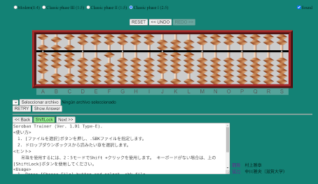
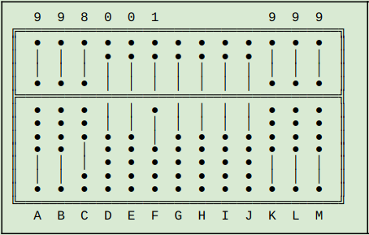

This is the site of jccsvq (Jesús Cabrera) at github.io
For now I only have two public repos here:
- SorobanTrainer
A fork of the impresive homonym
by mmurak
(See it in action!)

- txtabacus -
A small Python 3 module for creating text diagrams of various
types of abacus like this:

I needed it for various documents I wrote for my
personal website on both traditional and
advanced techniques for the oriental abacus (soroban, suanpan ...).